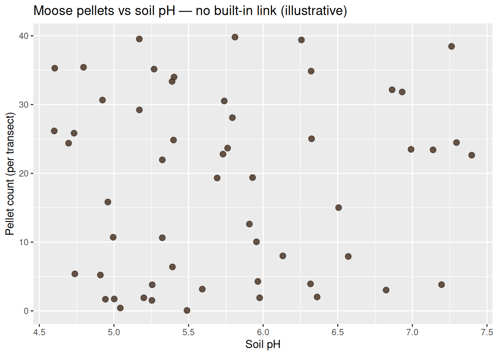
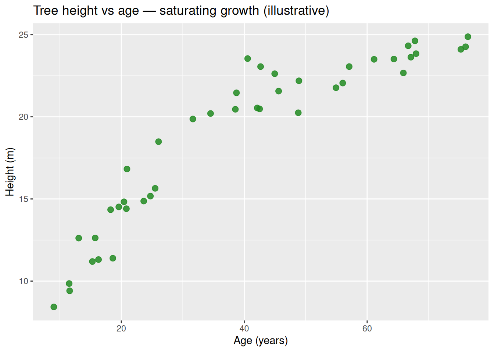
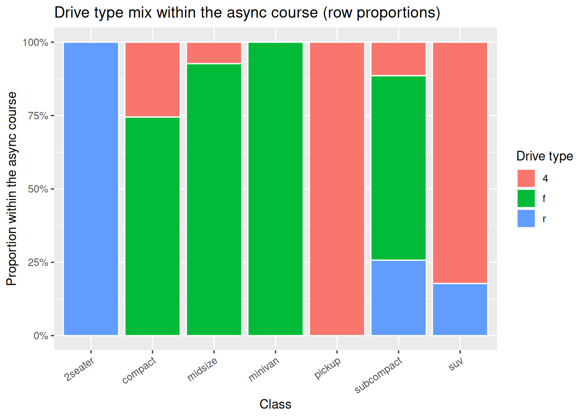

Code
if (!requireNamespace("tidyverse", quietly = TRUE)) {
install.packages("tidyverse", repos = "https://cloud.r-project.org")
}
library(tidyverse)Scatterplots and two-way tables
Project: Project 3 — Discovering Patterns · Prerequisite: Read 1 and Quiz A · Next: Quiz B, demo lab, exercise lab.
Complete Read 1 and Quiz A first. This reading adds scatterplots for two numerical variables and two-way tables + stacked bar charts for two categorical variables.
Two sections — use Check yourself before Quiz B.
After this reading you should be able to:
Two numerical variables — scatterplots and describing relationships
aes(x, y) and geom_point()).Two categorical variables — contingency tables, proportions, and stacked bar charts
position = "fill") to show proportions within bars.count(), group_by(), mutate(), and pivot_wider().Read 1 compared a numerical variable across groups (one numerical, one categorical). This section covers two numerical variables together — a scatterplot is the natural first graph, and describing form, direction, and strength is the essential skill.
Make scatterplots in ggplot2 and describe associations using form, direction, and strength.
When both variables are numerical, we often ask how one changes with the other: does taller vegetation go with wetter soil? Does leaf nitrogen track soil nitrate? A scatterplot puts one variable on the horizontal axis and one on the vertical axis; each point is one observational unit (a tree, a nest, a transect).
Load data into a data frame (or tibble) with two numeric columns. Map them in aes() and add points.
if (!requireNamespace("tidyverse", quietly = TRUE)) {
install.packages("tidyverse", repos = "https://cloud.r-project.org")
}
library(tidyverse)Minimal pattern:
ggplot(your_dataset, aes(x = variable_on_x, y = variable_on_y)) +
geom_point() +
labs(title = "…", x = "…", y = "…")Use labs() for titles and axis labels with units when you have them.
Read the cloud of points as a whole.
Form (shape). Is the trend roughly a straight line (linear), bent (curved / nonlinear), split into clusters, or no clear pattern?
Direction. As \(x\) increases, does \(y\) tend to increase (positive association), decrease (negative association), or show no consistent up-or-down trend?
Strength. How tightly do points follow the trend in the form? Strong: points closely hug a line or curve. Moderate: signal is visible but some random scatter above and below is noticeable. Weak: only a faint drift. None: no useful trend (uniform random scatter around a horizontal band).
These labels are judgment calls in practice; the point is to communicate what you see before moving to formal models (later in the course).
The plots below use made-up data for teaching. Each chunk builds a small tibble, shows the first 10 rows with head(..., 10), then plots all rows.
Context: Saplings in a plantation. Stem diameter (cm at breast height) vs age (years). Older stems are thicker; points fall near a straight line with little scatter.
set.seed(26)
trees_age_diam <- tibble(
age_years = runif(40, 5, 25),
diameter_cm = 0.8 * age_years + rnorm(40, 0, 0.4)
)
head(trees_age_diam, 10)# A tibble: 10 × 2
age_years diameter_cm
<dbl> <dbl>
1 5.33 4.03
2 10.8 8.80
3 22.5 19.0
4 21.0 16.9
5 11.2 9.11
6 14.4 11.2
7 20.9 16.2
8 19.7 15.2
9 11.8 8.62
10 18.4 14.8 ggplot(trees_age_diam, aes(x = age_years, y = diameter_cm)) +
geom_point(alpha = 0.85, size = 2.5, color = "darkgreen") +
labs(
title = "Sapling diameter vs age (illustrative)",
x = "Age (years)",
y = "Stem diameter (cm)"
)
Words: Positive direction, strong strength, linear form.
Context: Stream sites along a mountain gradient. Elevation (m) vs water temperature (°C) at midday in summer. Higher sites tend to be cooler.
set.seed(27)
stream_temp <- tibble(
elevation_m = runif(35, 200, 2200),
water_temp_c = 22 - 0.0065 * elevation_m + rnorm(35, 0, 0.35)
)
head(stream_temp, 10)# A tibble: 10 × 2
elevation_m water_temp_c
<dbl> <dbl>
1 2144. 8.05
2 368. 19.7
3 1948. 9.24
4 858. 15.9
5 645. 18.1
6 1003. 15.9
7 345. 19.4
8 205. 20.8
9 474. 19.3
10 584. 18.3 ggplot(stream_temp, aes(x = elevation_m, y = water_temp_c)) +
geom_point(alpha = 0.85, size = 2.5, color = "steelblue") +
labs(
title = "Stream temperature vs elevation (illustrative)",
x = "Elevation (m)",
y = "Water temperature (°C)"
)
Words: Negative direction, strong strength, linear form.
Context: Herbaceous plants along a transect. Soil nitrate (mg/kg) vs leaf nitrogen (%). Higher soil N tends to go with higher leaf N, with noticeable scatter from other factors.
set.seed(28)
leaf_soil <- tibble(
soil_nitrate_mgkg = runif(45, 5, 45),
leaf_nitrogen_pct = 2.0 + 0.06 * soil_nitrate_mgkg + rnorm(45, 0, 0.35)
)
head(leaf_soil, 10)# A tibble: 10 × 2
soil_nitrate_mgkg leaf_nitrogen_pct
<dbl> <dbl>
1 6.14 2.58
2 8.53 2.28
3 24.0 3.50
4 40.4 4.74
5 8.66 2.59
6 35.3 4.07
7 6.38 2.11
8 39.7 4.01
9 27.6 3.67
10 42.9 4.23ggplot(leaf_soil, aes(x = soil_nitrate_mgkg, y = leaf_nitrogen_pct)) +
geom_point(alpha = 0.85, size = 2.5, color = "chocolate4") +
labs(
title = "Leaf nitrogen vs soil nitrate (illustrative)",
x = "Soil nitrate (mg/kg)",
y = "Leaf nitrogen (%)"
)
Words: Positive direction, moderate strength, linear form.
Context: Forest plots. Canopy openness (percent sky visible) vs understory seedling count per \(m^2\). Slight tendency for more seedlings where light is higher, but noise dominates.
set.seed(29)
understory <- tibble(
canopy_open_pct = runif(50, 5, 45),
seedlings_per_m2 = 2.5 + 0.08 * canopy_open_pct + rnorm(50, 0, 4)
)
head(understory, 10)# A tibble: 10 × 2
canopy_open_pct seedlings_per_m2
<dbl> <dbl>
1 8.99 2.84
2 14.6 0.325
3 9.13 3.24
4 18.0 4.11
5 28.4 5.39
6 8.72 2.35
7 38.1 6.15
8 39.7 5.82
9 9.80 3.42
10 14.3 2.85 ggplot(understory, aes(x = canopy_open_pct, y = seedlings_per_m2)) +
geom_point(alpha = 0.85, size = 2.5, color = "olivedrab") +
labs(
title = "Understory seedlings vs canopy openness (illustrative)",
x = "Canopy openness (%)",
y = "Seedlings per m²"
)
Words: Positive direction, weak strength, linear drift at best.
Context: Moose pellet counts along transects vs soil pH. No story linking these two in this toy dataset; points fill the rectangle.
set.seed(30)
moose_ph <- tibble(
soil_ph = runif(55, 4.5, 7.5),
pellet_count = runif(55, 0, 40)
)
head(moose_ph, 10)# A tibble: 10 × 2
soil_ph pellet_count
<dbl> <dbl>
1 4.80 35.4
2 5.96 4.28
3 5.59 3.16
4 5.76 23.7
5 5.40 34.0
6 4.94 1.69
7 7.20 3.81
8 5.17 29.2
9 7.40 22.6
10 4.92 30.7 ggplot(moose_ph, aes(x = soil_ph, y = pellet_count)) +
geom_point(alpha = 0.85, size = 2.5, color = "#4a3728") +
labs(
title = "Moose pellets vs soil pH — no built-in link (illustrative)",
x = "Soil pH",
y = "Pellet count (per transect)"
)
Words: No clear direction, no real strength, no simple form.
Context: Tree height (m) vs age (years) in even-aged stands. Growth is fast when young and levels off as crowns compete (diminishing returns), so the mean trend bends.
set.seed(31)
tree_curve <- tibble(
age_years = runif(42, 8, 80),
height_m = 25 * (1 - exp(-0.045 * age_years)) + rnorm(42, 0, 1.1)
)
head(tree_curve, 10)# A tibble: 10 × 2
age_years height_m
<dbl> <dbl>
1 45.6 21.6
2 76.4 24.9
3 38.7 21.5
4 38.6 20.5
5 76.0 24.3
6 40.6 23.5
7 68.0 23.8
8 20.4 14.8
9 75.2 24.1
10 25.5 15.6ggplot(tree_curve, aes(x = age_years, y = height_m)) +
geom_point(alpha = 0.85, size = 2.5, color = "forestgreen") +
labs(
title = "Tree height vs age — saturating growth (illustrative)",
x = "Age (years)",
y = "Height (m)"
)
Words: Overall positive association, strong trend, nonlinear (curved) form.
Context: Pollinator visits per flower vs nectar volume (\(\mu\)L). Very little nectar attracts few visitors; moderate nectar is best; very high volume may correlate with different flower types or confounding, producing a hump in this toy example.
set.seed(32)
nectar <- tibble(
nectar_ul = runif(40, 0.5, 8),
visits = -0.35 * (nectar_ul - 4)^2 + 12 + rnorm(40, 0, 1.2)
)
head(nectar, 10)# A tibble: 10 × 2
nectar_ul visits
<dbl> <dbl>
1 4.29 11.6
2 4.96 10.4
3 6.57 10.8
4 5.97 11.1
5 1.64 10.9
6 7.67 8.34
7 6.15 11.0
8 6.89 6.62
9 5.55 12.3
10 3.40 12.4 ggplot(nectar, aes(x = nectar_ul, y = visits)) +
geom_point(alpha = 0.85, size = 2.5, color = "goldenrod3") +
labs(
title = "Pollinator visits vs nectar volume (illustrative)",
x = "Nectar volume (µL)",
y = "Visits per flower (count)"
)
Words: Nonlinear form (hump), moderate strength; direction is not simply positive or negative over the whole \(x\) range.
Context: Lake depth (m) vs submerged macrophyte cover (%). In deeper water, light drops; cover falls off quickly at first, then more slowly (curved decline).
set.seed(33)
lake <- tibble(
depth_m = runif(38, 0.5, 12),
plant_cover_pct = 90 * exp(-0.22 * depth_m) + rnorm(38, 0, 4)
)
head(lake, 10)# A tibble: 10 × 2
depth_m plant_cover_pct
<dbl> <dbl>
1 5.63 23.7
2 5.04 27.9
3 6.06 24.9
4 11.1 10.8
5 10.2 11.4
6 6.45 22.5
7 5.53 27.6
8 4.45 36.2
9 0.678 85.5
10 1.86 52.5ggplot(lake, aes(x = depth_m, y = plant_cover_pct)) +
geom_point(alpha = 0.85, size = 2.5, color = "seagreen") +
labs(
title = "Aquatic plant cover vs depth (illustrative)",
x = "Depth (m)",
y = "Plant cover (%)"
)
Words: Negative association overall, strong trend, nonlinear form.
alpha in geom_point() helps when points overlap.size adjusts point size for slides or print.color or shape can encode a third variable later; for two numerical variables only, one color for all points is fine.For two numerical variables, a scatterplot in ggplot2 uses aes(x, y) and geom_point(). Describe what you see with form (linear vs curved vs none), direction (positive, negative, or none), and strength (strong through none). Real field and lab data rarely look as clean as teaching simulations, but the same vocabulary organizes your first look before modeling.
When both variables are numerical. The explanatory (predictor) variable goes on the x-axis; the response goes on the y-axis.
Positive direction: as \(x\) increases, \(y\) tends to increase as well (upward slant).
Form (linear vs curved), direction (positive, negative, none), and strength (strong, moderate, weak, none).
geom_point() with aes(x = var1, y = var2) inside ggplot(data, ...).
For Project 3, a two-way table answers ‘How are two categorical variables distributed together?’ A 100% stacked bar shows within-group proportions clearly — both tools belong in your bivariate toolkit.
Build two-way tables with joint, row, and column proportions, and create stacked bar charts.
Each observation has a level of variable A (e.g. species) and a level of variable B (e.g. habitat). We summarize how the combinations co-occur: counts in each cell of a table, then graphs can show these counts or proportions at a glance.
Setting. Birds counted in two habitats: Urban or Rural. Species recorded as Robin or Sparrow (ignore other species here).
Counts:
| Urban | Rural | Row total | |
|---|---|---|---|
| Robin | 8 | 2 | 10 |
| Sparrow | 4 | 6 | 10 |
| Column total | 12 | 8 | 20 = grand total \(N\) |
So there are 20 birds. The joint count in each cell is a count of birds with that (species, habitat) pair.
Each cell count divided by \(N = 20\) answers: What fraction of all birds fall in this cell?
Check: \(0.40 + 0.10 + 0.20 + 0.30 = 1\).
Within each species, divide by that row’s total (10). Answers: Among Robins only, what fraction were Urban vs Rural? (and similarly for Sparrows.)
Robin: Urban \(8/10 = 0.80\), Rural \(2/10 = 0.20\).
Sparrow: Urban \(4/10 = 0.40\), Rural \(6/10 = 0.60\).
Each row sums to \(1\).
Within each habitat, divide by that column’s total. Answers: Among Urban birds, what fraction were Robin vs Sparrow?
Urban: Robin \(8/12 \approx 0.67\), Sparrow \(4/12 \approx 0.33\) (column total 12).
Rural: Robin \(2/8 = 0.25\), Sparrow \(6/8 = 0.75\) (column total 8).
Each column sums to \(1\).
Note: The same four counts support three different stories depending on whether you normalize by everything (joint or “grand”), by rows (species), or by columns (habitat). Be explicit about which denominator you use when you write a sentence or label a plot.
We store one row per bird: variables species and habitat.
if (!requireNamespace("tidyverse", quietly = TRUE)) {
install.packages("tidyverse", repos = "https://cloud.r-project.org")
}
library(tidyverse)
birds <- tibble(
species = c(rep("Robin", 10), rep("Sparrow", 10)),
habitat = c(rep(c("Urban", "Rural"), c(8, 2)), rep(c("Urban", "Rural"), c(4, 6)))
) |>
mutate(
species = factor(species, levels = c("Robin", "Sparrow")),
habitat = factor(habitat, levels = c("Urban", "Rural"))
)birds |>
count(species, habitat) |>
pivot_wider(names_from = habitat, values_from = n, values_fill = 0)# A tibble: 2 × 3
species Urban Rural
<fct> <int> <int>
1 Robin 8 2
2 Sparrow 4 6joint <- birds |>
count(species, habitat) |>
mutate(prop_joint = n / sum(n))
row_prop <- birds |>
count(species, habitat) |>
group_by(species) |>
mutate(prop_row = n / sum(n)) |>
ungroup()
col_prop <- birds |>
count(species, habitat) |>
group_by(habitat) |>
mutate(prop_col = n / sum(n)) |>
ungroup()
joint# A tibble: 4 × 4
species habitat n prop_joint
<fct> <fct> <int> <dbl>
1 Robin Urban 8 0.4
2 Robin Rural 2 0.1
3 Sparrow Urban 4 0.2
4 Sparrow Rural 6 0.3row_prop# A tibble: 4 × 4
species habitat n prop_row
<fct> <fct> <int> <dbl>
1 Robin Urban 8 0.8
2 Robin Rural 2 0.2
3 Sparrow Urban 4 0.4
4 Sparrow Rural 6 0.6col_prop# A tibble: 4 × 4
species habitat n prop_col
<fct> <fct> <int> <dbl>
1 Robin Urban 8 0.667
2 Robin Rural 2 0.25
3 Sparrow Urban 4 0.333
4 Sparrow Rural 6 0.75 Bars show species; segments show habitat; height of each segment is the cell count.
birds |>
count(species, habitat) |>
ggplot(aes(x = species, y = n, fill = habitat)) +
geom_col(color = "white") +
labs(
title = "Bird counts by species and habitat",
x = NULL,
y = "Count",
fill = "Habitat"
)
position = "fill" stretches each bar to height 1; segment heights match row proportions (prop_row). Good for comparing habitat mix between species when raw counts differ.
birds |>
count(species, habitat) |>
ggplot(aes(x = species, y = n, fill = habitat)) +
geom_col(position = "fill", color = "white") +
scale_y_continuous(labels = scales::label_percent()) +
labs(
title = "Habitat distribution within each species",
x = NULL,
y = "Proportion (within species)",
fill = "Habitat"
)
Notice that you swap what is on the x-axis and what is fill if the research question reads more naturally the other way (e.g. habitat on the x-axis, species as fill).
mpg: class vs drv (several categories each)Each row is a car model. We cross vehicle class and drive type.
data("mpg", package = "ggplot2")
mpg |>
count(class, drv) |>
pivot_wider(names_from = drv, values_from = n, values_fill = 0)# A tibble: 7 × 4
class r `4` f
<chr> <int> <int> <int>
1 2seater 5 0 0
2 compact 0 12 35
3 midsize 0 3 38
4 minivan 0 0 11
5 pickup 0 33 0
6 subcompact 9 4 22
7 suv 11 51 0Row proportions: among cars in a given class, what fraction have each drv?
mpg |>
count(class, drv) |>
group_by(class) |>
mutate(prop_within_class = n / sum(n)) |>
ungroup() |>
print(n = 20)# A tibble: 12 × 4
class drv n prop_within_class
<chr> <chr> <int> <dbl>
1 2seater r 5 1
2 compact 4 12 0.255
3 compact f 35 0.745
4 midsize 4 3 0.0732
5 midsize f 38 0.927
6 minivan f 11 1
7 pickup 4 33 1
8 subcompact 4 4 0.114
9 subcompact f 22 0.629
10 subcompact r 9 0.257
11 suv 4 51 0.823
12 suv r 11 0.177 Stacked bars (counts and 100% stacked):
mpg_ct <- mpg |> count(class, drv)
ggplot(mpg_ct, aes(x = class, y = n, fill = drv)) +
geom_col(color = "white") +
labs(
title = "Drive type by vehicle class (counts)",
x = "Class",
y = "Count",
fill = "Drive type"
) +
theme(axis.text.x = element_text(angle = 35, hjust = 1))
ggplot(mpg_ct, aes(x = class, y = n, fill = drv)) +
geom_col(position = "fill", color = "white") +
scale_y_continuous(labels = scales::label_percent()) +
labs(
title = "Drive type mix within the async course (row proportions)",
x = "Class",
y = "Proportion within the async course",
fill = "Drive type"
) +
theme(axis.text.x = element_text(angle = 35, hjust = 1))
species vs islandI load the published TidyTuesday file from GitHub with read_csv(). One could also download the CSV once and use a local path instead.
penguins <- read_csv(
"https://raw.githubusercontent.com/rfordatascience/tidytuesday/master/data/2020/2020-07-28/penguins.csv",
show_col_types = FALSE
)
penguins |>
count(species, island) |>
pivot_wider(names_from = island, values_from = n, values_fill = 0)# A tibble: 3 × 4
species Biscoe Dream Torgersen
<chr> <int> <int> <int>
1 Adelie 44 56 52
2 Chinstrap 0 68 0
3 Gentoo 124 0 0Column proportions: among birds on a given island, what fraction belong to each species?
penguins |>
drop_na(species, island) |>
count(species, island) |>
group_by(island) |>
mutate(prop_within_island = n / sum(n)) |>
ungroup()# A tibble: 5 × 4
species island n prop_within_island
<chr> <chr> <int> <dbl>
1 Adelie Biscoe 44 0.262
2 Adelie Dream 56 0.452
3 Adelie Torgersen 52 1
4 Chinstrap Dream 68 0.548
5 Gentoo Biscoe 124 0.738Stacked bars: counts and column-style emphasis: put island on the x-axis and species as fill so each bar is an island total and segments show species mix on that island.
pg <- penguins |> drop_na(species, island) |> count(species, island)
ggplot(pg, aes(x = island, y = n, fill = species)) +
geom_col(color = "white") +
labs(
title = "Penguin counts by island and species",
x = "Island",
y = "Count",
fill = "Species"
)
ggplot(pg, aes(x = island, y = n, fill = species)) +
geom_col(position = "fill", color = "white") +
scale_y_continuous(labels = scales::label_percent()) +
labs(
title = "Species mix within each island (column proportions)",
x = "Island",
y = "Proportion within island",
fill = "Species"
)
For two categorical variables, start with counts in a two-way table, then compute proportions with a clear denominator: joint (\(N\) everywhere), row (within levels of the variable on the rows), or column (within levels of the variable on the columns). Stacked bar charts display the same structure: stacked counts show how many; position = “fill” shows fractions within each bar (match the fraction definition to rows or columns by choosing x and fill thoughtfully). ::: {.callout-tip icon=false} ## Check yourself — Two-way tables and stacked bar charts
Birds: 8 Robin+Urban, 2 Robin+Rural, 4 Sparrow+Urban, 6 Sparrow+Rural. Compute the joint proportion for Robin+Urban.
Using the same bird table, what is the row proportion of Robins that are Urban?
What is the denominator for a column proportion?
In ggplot2, what does position = "fill" do in a stacked bar chart?
Which tidyverse function pivots a count table from long to wide format?
:::
\(8/20 = 0.40\) — 40% of all birds are Robin in Urban habitat.
\(8/10 = 0.80\) — 80% of Robins are in Urban habitat (denominator is the Robin row total).
The column total — the number of observations in that category of the column variable.
It normalizes each bar to total 1 (100%), showing the proportion of each fill category within each bar rather than raw counts.
pivot_wider() — e.g. pivot_wider(names_from = col_var, values_from = n).